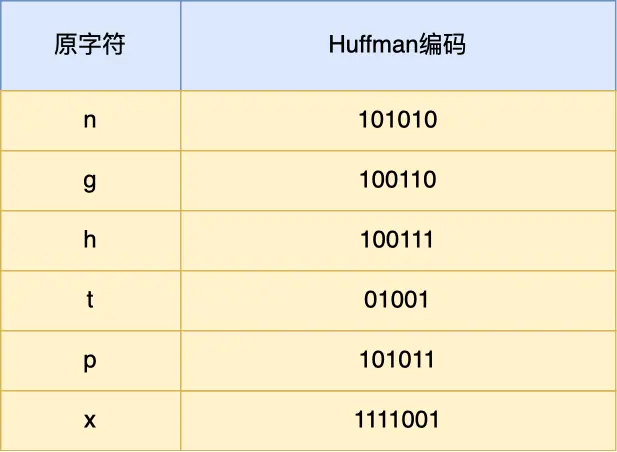
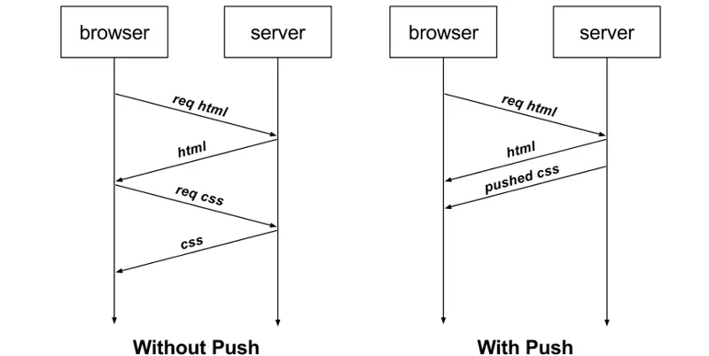

HTTP/2.0
一、HTTP/1.1协议的性能问题
先回忆下HTTP/1.1存在的性能问题，因为HTTP/2.0协议就是把这些性能问题都给解决的：
消息的大小变大了：从几KB大小的消息到几MB大小的消息。
页面资源变多了：从每个页面不到10个的资源，到每页超过100多个资源。
内容形式变多样了：从淡村的文本内容，到图片、视频、音频等内容。
实时性要求变高了：对页面的实时性的应用越来越多了。
这些变化带来最大的性能问题就是HTTP/1.1的高延迟，延迟高直接影响的就是用户体验，主要原因如下：
延迟难以下降：虽然现在的网络的带宽比以前变多了，但是延迟降到一定幅度后，就难以在下降了，说白了就是到达了延迟的下限。
并发连接有限：谷歌浏览器最大的并发连接数是6个，而且每一个链接都要经过TCP和TLS握手耗时，以及TCP慢启动过程给流量带来的影响。
对头阻塞问题：同一链接智能完成一个HTTP事务（请求和响应），才能处理下一个事务。
HTTP头部巨大且重复：由于HTTP协议是无状态的，每一个请求都要携带HTTP头部，特别是对于有携带Cookie的头部，而Cookie的大小通常很大。
不支持服务器推送消息：当客户端需要获取通知的时候，只能通过不断轮询的方式来拉取消息，无疑带来了巨大的资源浪费。
为了解决HTTP/1.1的性能问题，HTTP/1.1也做了很多的优化：
将多张小图片合并成一张大图供浏览器JavaScript来切割使用，这样可以将多个请求合并成一个请求，但是带来了新的问题，当某个小的图片更新了就需要重新请求大图片，浪费了大量的额网络带宽。
将图片的二进制数据通过Base64编码后，把编码数据嵌入到HTML或CSS文件中，一次来减少网络请求的次数。
将多个体积较小的JavaScript文件使用Webpack等工具打包成一个体积更到的JavaScript文件，以一个请求代替多个亲够，但是带来的问题就是当某个JS文件变化了就需要重新请求一个包中的所有JS文件。
将同一个页面的资源分散到不同域名，提升并发连接上限，因为浏览器通常会对同一域名的HTTP连接最大智能时6个。
二、兼容HTTP/1.1
HTTP/2出来的目的是味蕾改善HTTP性能，协议升级有一个很重要的地方就是兼容老版本的协议，否则新协议推广就相当困难了，所幸的是HTTP/2做到了兼容HTTP/1.1。
那么HTTP/2是怎么兼容的呢？
HTTP/2没有在URI中引入新的协议名，仍然用【http://】表示明文协议，用【https://】表示加密协议，于是只需要浏览器和服务器在背后自动升级协议，这样可以让用户意识不到协议的升级，很好的视线了协议的平滑升级。
只在应用层做了改变，还是基于TCP协议传输的，应用层方面为了保持功能上的兼容，HTTP/2把HTTP分解成了语义和语法两个部分：
语义：不会发生变化和HTTP/1.1完全一致。比如请求方式、状态码、头字段等规则都保留不变。
语法：做了很多改造，基本改变了HTTP报文的传输格式。
三、HTTP/2新功能
头部压缩
HTTP协议的报文是由Header + Body构成的，对于Body部分，HTTP/1.1协议可以使用头字段Content-Encoding来指定Body的压缩方式，比如用gzip压缩，这样可以节约贷款，但报文中的另外第一部分Header是没有针对它的优化手段。
HTTP/1.1报文部分Header存在的问题：
含有很多固定的字段：比如Cookie、User Agent、Accept等，这些字段加起来也高达几百字节甚至上千字节，所以有必要压缩。
大量的请求和响应的报文里有很多字段都是重复的，这样会使得大量贷款被这些荣誉点额数据占用了，所以有必须要避免重复性。
字段是ASCII编码，虽然易于人观察，但是效率比较低，所以必要改成二进制编码。
HTTP/2对Header部分做了大改造，把以上的问题都给解决。
HTTP/2没有使用常见的gzip压缩方式来压缩头部，而是开发了HPACK算法，HPACK算法主要包含三个组成部分：静态字段、动态字段和Huffman编码（压缩算法）。
客户端和服务端都会建立和维护字典，用长度较小的索引符号表示重复的字符串，再用Huffman编码压缩数据，可达到50% ~ 90%的高压缩率。
静态表编码
HTTP/2为高频出现在头部的字符串和字段建立了一张静态表，，它是写入到HTTP/2框架里的，不会变化的，静态变共有61组如下图所示：

表中的Index表示索引，Header Value表示索引的对应的Value，Header Name表示字段的名字，比如Index为2代表GET，Index为8代表状态码200。直接使用索引来表示字段名。
可能注意到，表中有的Index没有对应的Header Value，这是因为这些Value并不是固定的而是变化的，这些Value都会经过Huffman编码后，才会发送出去。
举例子来说明，下面这个server头部字段，在HTTP/1.1的形式如下：
1server: nghttpx\r\n算上冒号空格和末尾的\r\n，一共占用了17个字符，而使用了静态表和Huffman编码，可以将它压缩成8字节，压缩率为47%。我们看下如何实现的。
server: nghttpx\r\n在HTTP/2中的编码实现：看下HTTP/2协议的网络包，如下图所示，高亮部分就是server头部字段，只用了8个字节来表示server头部数据。
根据RFC7541规范，通过头部字段属于静态表范围，并且Value是变化的，那么它的HTTP/2头部前2位固定位01，所以整个头部格式如下图所示：
HTTP/2头部由于基于二进制编码，就不需要冒号空格和末尾的\r\n作为分隔符，于是改用表示字符串长度（Value Length）来分割Index和Value。
接下来，根据这个头部格式来分析上面抓包server头部的二进制数据。
首先，从静态表中查到server头部字段的Index为54，二进制位110110，再加上固定的01，头部格式第1个字节就是01110110，这正式上面抓包标注的红色部分的二进制数据。
然后，第二个字节的首个比特位表示Value是否经过Huffman编码 剩余的7位表示Value的长度（单位字节），比如这次的例子中的第二个字节位 10000110，首位比特位为1就代表Value字符串时经过Huffman编码的，经过Huffman编码的Value长度位6。
最后，字符串nghttpx经过Huffman编码后压缩成了6个字节，Huffman编码的原理是将高频出现的信息用较短的编码表示，从而缩减字符串长度。
于是，在统计大量的HTTP头部后，HTTP/2根据出现频率将ASCII编码为了Huffman编码表，可以在RFC7541文档中肇东这张静态Huffman表，，nghttpx中每个字符串对应的Huffman编码如下图所示：

11通过查表后，字符串nghttpx的Huffman的编码如下图所示，共6个字节，每一个字符的Huffman编码用相同的颜色对应起来，最后的7位是补位。
11最终，server头部的二进制书记对应的静态头部格式如下：


动态编码表
静态表中只包含了61种高频出现的头部的字符串，不在静态表范围内的额头部字符串就要自行构建动态表，它的Indecx从62起步，会在编码解码的时候随时更新。
比如，第一次发送时头部的User-Agent字段数据有上百个字节经过Huffman编码发送出去后，客户端和服务端都会更新自己的动态表，添加一个新的Index号62。那么在下一次发送的时候，就不用重复发送这个字段的数据了，只要发一个字节就是Index就可以了，因为双方都可以根据自己的动态表获取到字段的数据。
所以，使得动态表生效有一个前提：必须同一个链接上。重复传输完全相同的HTTP头部。如果消息字段在1个链接上只发送1次，或者重复传输时，字段总是略有变化，动态表就是无法被重复利用了。
因此，随着在同一HTTP/2链接上发送的报文越来越多，客户端和服务端双方的字典基类就越来越多，理论上最终每个头部字段都会变成1个字节的Index，这样就可以避免大量的冗余数据的传说，大大节约了带宽。
但是随着动态表越来越大，占用的内存也越来越大 ，占用太多内存的话，就会服务器的性能，因此Web服务器都会提供类似http2_max_requests的配置，用于限制一个链接上能够传输的请求数量，避免动态表无限增大，请求数量达到上限后，就会关闭HTTP/2链接来释放内存。
综上，HTTP/2头部的编码通过【静态表、动态表、Huffman编码】共同完成的。
二进制帧
HTTP/2厉害的地方在于改进了HTTP/1的文本格式改成了二进制格式进行数据传播，极大提高了HTTP传输效率，而且二进制数据使用位运算能高效解析。
如下图所示，HTTP/1.1响应和HTTP/2响应的区别：

HTTP/2把响应报文分成了2类帧，途中的HEADERS（首部）和DATA（数据）是帧的类型，也就是一说一条HTTP响应划分成了两类帧来传输，并且采用了二进制来编码。
比如状态码200，在HTTP/1.1中用‘2’0‘‘0’三个字符来表示（二进制：00110010 00110000 00110000），共使用了3个字节，如下图所示：

在HTTP/2对于状态码200的二进制编码是10001000，只用了1个字节，相比与HTTP/1.1节省了2个字节，如下图所示：

Header:status:200 OK编码内容为 1000 1000那么表达的含义是什么？

最前面的1表示该Header是静态表中已经存在的KV。
”:status 200 OK“静态表中的编码是8，即1000。
因此整齐加起来就是1000 1000。
HTTP/2二进制帧的结构如下图所示：
帧头（Frame Header）很小，只有9个字节。
帧长度： 3个字节，表示整个帧数据的的长度（Frame Playload Length）。
帧类型：1个字节，HTTP/2中有10种类型的帧，一般分为数据帧和控制帧两类，如下表：
标志位：1个字节，可以存储8个标志位，用于携带简单的控制信息：
END_HEADERS：表示头数据结束标志，相当于HTTP/1后的空行（"\r\n "）。
END_Stream：表示当方向书记发送结束，后续不会再有数据帧。
PRIORITY：表示流的优先级。
R：1位，保留不用。
流标识符：4个字节-1位，只有31位可用，因此流表示父最大值是231，大约是21亿，主要作用是用来表示该Frame属于哪个Stream，接收方可以根据这个信息从乱序的帧里找到相同的StreamID的帧，从而有序的组装帧。
实际传输的数据：就是帧数据，存放的是通过HPACK算法压缩的哦HTTP头部和包体。
并发传输
直到了HTTP/2的帧结构后，看下如何是并发传输的。
我们知道HTTP/1.1的视线是基于请求-响应的模型，同一个链接中，HTTP完成一个事务（请求与响应），才可以处理下一个事务，也就是发出去的请求要等待响应的构成，是没有办法做其他的事情的，如果响应延迟了，那么后续的请求都无法进行发送 ，也会造成对头阻塞的问题。
而HTTP/2是通过Stream设计的，多个Stream复用一条TCP连接，达到了并发的效果，解决了HTTP/1.1对头阻塞的问题，提高了HTTP传输的吞吐量。
为了理解HTTP/2并发是如何实现的，先来理解下HTTP/2中的Stream、Message、Frame3个概念。如下图所示：

1个TCP连接可以包含多个Stream，Stream是HTTP/2并发的关键技术。
Stream里可以包含1个或多个Message，Message对应HTTP/1中的请求或响应，由HTTP头部和包结构体构成。
Message里包含一条或多条Frame，Frame是HTTP/2最小的单位，以二进制压缩格存放HTTP/1中的内容（头部=和包体）。
因此，我们可以知道，多个Stream跑在一个TCP连接中，同一个HTTP请求与响应是跑在一个Stream中，HTTP消息可以由多个Frema构成，一个Frame可以由多个TCP报文构成。
在HTTP/2连接上，不同Stream的帧是可以乱序发送的（因此可以并发不同的Stream），因为每个帧的头部都会携带StreamID的信息，所以接收端可以通过StreamID来组装成有效的HTTP消息，而同一Stream内部的帧必须是严格有序的。
比如下图，服务端并行交错的发送了两个响应：Stream1和Stream3，这来那个该字段Stream都是跑在一个TCP连接上的，客户端收到后，会根据相同的StreamID有序的组成成HTTP消息。

客户端和服务器双方都可以建立Stream，因为服务端可以主动推送资源给客户端，客户端建立的Stream必须是奇数号，而服务端建立的Stream必须是偶数号。
如下图所示，Stream1是客户端向服务端请求的资源，属于客户端建立的Stream，所以该Stream的ID奇数，Stream2和4都是服务端主动向客户端推送的资源，属于服务端建立的Stream，所以这两个StreamID都是偶数。
同一个连接中的StremID是不能复用的，只能顺序递增，所以当StreamID耗尽的时候需要发送一个监控指针GOAWAY用来关闭TCP连接。
在Nginx中，可以通过http2_max_concurrent_Streams配置来设置Stream的上限，默认是128个。
HTTP/2通过Stream实现的并发，比HTTP/1.1通过TCP连接实现的并发厉害，因为当HTTP/2实现100个并发Stream是，只需要建立一个TCP连接，而HTTP/1.1需要建立100个TCP连接，每个TCP连接都要经过TCP握手、慢启动以及TLS握手过程都很耗时。
HTTP/2还可以对每个Stream设置不同的优先级，帧头中的标志位可以设置优先级，帧头中标志位，可以设置优先级，比如客户端访问HTML/CSS和图片资源时，希望服务端先传递HTML/CSS，在传图片，那么就可以通过设置Stream的优先级来实现，以此来提高用户体验。
服务器主动推送资源
HTTP/1.1不支持服务器主动推送资源给客户端，都是由客户端详服务器发送请求后，才能获取到服务器的响应资源。
比如，客户端通过HTTP/1.1请求从服务器货到的了HTML文件，而HTML文件可能会还需要依赖CSS来渲染页面，这时客户端还要发送获取CSS文件的请求，需要两次消息的往返，如下图左边：

上图右边中，HTTP/2中，客户端访问HTML时，服务器可以直接主动推送CSS文件，减少了消息传递的次数。
在Nginx中，如果你希望客户端访问/test.html时，服务度直接推送/test.css时可以直接如下配置:
31location /test.html{2 http2_push /test.css;3}那么HTTP/2中如何实现推送的呢？
客户端发起请求，必须要使用奇数号的Stream，服务器主动的推送，使用的是偶数号的Stream，服务器在推送资源的时候，会通过PUSH_PROMISE帧传输HTTP头部，并通过帧中的Promised Stream ID字段告诉客户端，接下来在哪个偶数号Stream中发送包体。

如上图所示，在Stram中通过通知客户段CSS资源即将到来，然后在Stream2中发送CSS资源，注意Stream1和2是可以并发的。
四、总结
11HTTP/2协议其实还有很多内容，比如流控制、流状态、依赖关系等。
主要介绍了关于HTTP/2是如何提升性能的几个方向，相比HTTP/1大大的提高了传输效率、吞吐能力。
对于常见的HTTP头部通过静态表和Huffman编码的方式，将体积压缩了近一半，而且针对后续的请求头，还可以建立动态表，将体积压缩了近90%，大大提高了编码效率，同时节约了带宽资源。
不过，动态表并发可以无限增大，因为动态表是会占用内存的，动态表越大，内存越大，容易影响到服务器总体的并发能力，因此服务器需要限制HTTP/2链接时长或者请求的次数。
HTTP/2实现了Stream奇数，多个Stream只需要复用1个TCP连接，节约了TCP和TLS握手时间，以及减少了TCP慢启动阶段对流量影响。不同的StreamID可以并发，即乱序发送帧时没有问题的，比如发送A请求帧1->B请求帧1->A请求帧2->B请求帧2，但是同一个Stream里的帧必须严格有序的。
另外，可以根据资源的渲染情况来设置Stream的优先级，从而提高用户体验。
服务端支持主动推送资源，大大提升了消息的传输性能，服务器推送资源时，会先发送PUSH_PROMISE，帧，告诉客户端接下来在哪个Stream中发送资源，然后用偶数号Stream发送资源给客户端。
HTTP/2通过Stream并发能力，解决了HTTP/1对头阻塞的问题，看似很完美，但是HTTP/2还是存在对头阻塞的问题，只不过不是在HTTP这层，是在TCP层。
因为HTTP/2是基于TCP协议传输的，TCP是字节流协议，TCP层必须保证收到的字节数据是完整连续的这样内核才会将传冲缺数据返回给HTTP应用，如果当1个字节数据丢失没有及时到达的话，后续的字节数据智能存放在内核缓冲区里，只有等到这1个字节数据到达时，HTTP才能从内核中拿到数据，这就是HTTP/2的对头阻塞问题。
解决方案就是使用UDP来传输 就是HTTP/3了。